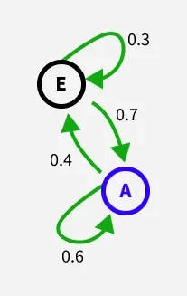
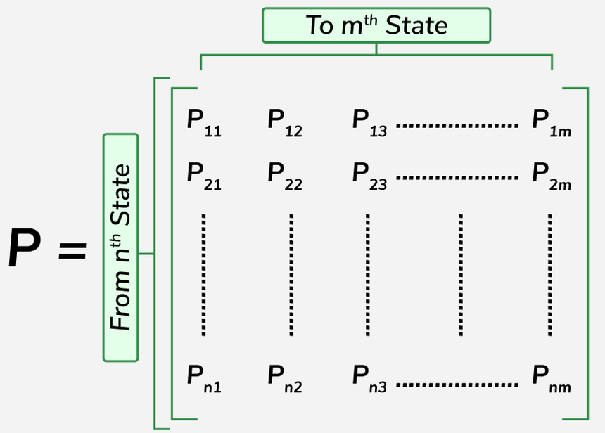
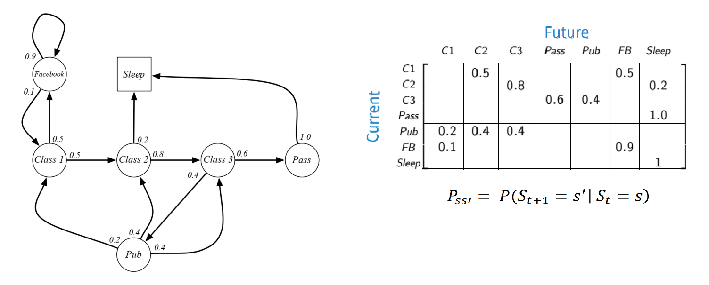
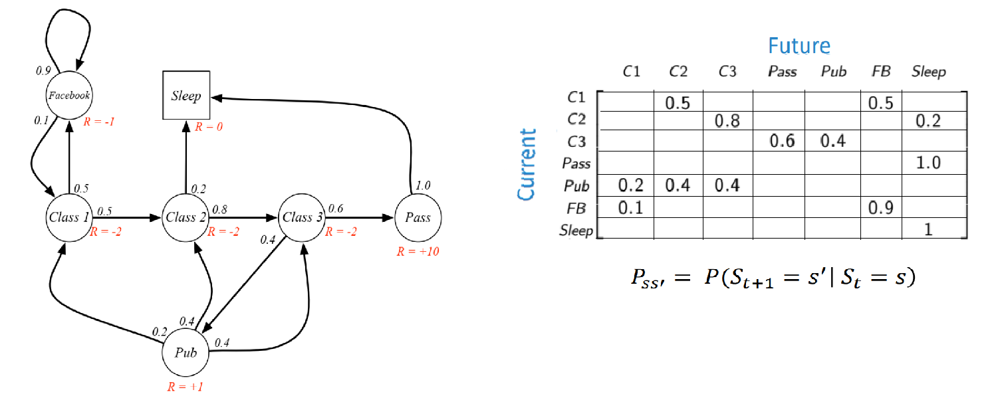

 |
if in state A:
stays in A: probability 0.6
moves to E: probability 0.4
if in state E:
moves to A: probability 0.7
stays in E: probability 0.3
|

where, rows represent the system's current state (i). cols represent the system's next state (j). Pᵢⱼ represents the exact probability of transitioning from state i to j in a single step mathematically Pᵢⱼ = P(Xₙ₊₁=j|Xₙ=i) where, each row of the matrix sums to 1 (marginalization)
MDP : Markov decision proces MDP is mathematical framework defining the interaction between a learning agent and its environment in terms of states, actions, and rewards. MDP is represented formally by a quin-tuple M = ⟨S,A,T,R,γ⟩, where S : set of states A : set of actions T : SxAxS : transition function, T(s,a,s') probability of reaching state s', when action a is selected at state s. R : SxAxS : reward function, R(s,a,s') specifies an immediate reward for taking action a∈A when in state s∈S. γ ∈ [0,1] : discount factor that determines the importance of future rewards.
at each time step t: the agent is in a state st∈S. the agent chooses an action at∈A. after taking the action, the environment moves to a new state st+1 ∈ S. the reward function R(t+1) specifies the reward for being in state St+1. Discounting It is method used to determines the importance of future rewards. It is used to reduce the importance of rewards received in future compared to rewards received immediately. It is represented by the discount factor γ ∈ [0,1). where, γ=0 → agent considers only immediate rewards. γ≈1 → agent values future rewards almost as much as immediate rewards. discounted return It is refers to expected cumulative reward = Gt = Rt+1 + γRt+2 + γ²Rt+3 ... = k=0∑ γᵏ Rt+k+1 where, Gt is the total return at time t. policy policy determines what action(s) to take at each state. policy defines the agent's behavior by mapping states to actions (or distributions over actions). policy is represented by function π:SxA→[0,1] Types of Policies 1. stochastic : assigns a distribution over actions to each state. 2. deterministic : directly maps a state to an action to take when in that state. Agent's goal to learn an optimal policy π* that maximizes the reward function value function it helps to estimates how much total reward the agent can expect to accumulate in the future, Types of Value Functions 1. State-Value Function : Vπ(s) Estimates the expected return starting from state s and following policy π. mathematically Vπ(s)=Eπ[k=0∑ γk Rt+k+1 | St=s] 2. Action-Value Function :Qπ(s,a) Estimates the expected return starting from state s, taking action a, and then following policy π. mathematically Qπ(s,a) = Eπ[k=0∑γk Rt+k+1 | St=s, A t=a ] optimal policy π* optimal policy π* selects the action a, that maximizes the expected cumulative reward starting from a given state s. i.e. π* = argmaxπη(π) mathematically V*(s) = argmaxπVπ(s) Q*(s, a) = argmaxπQπ(s,a) Bellman optimality equation the value function can be decomposed into two parts: a. immediate reward Rt+1 b. discounted value of successor state γ.V(St+1) V*(s) = maxaT(s,a,s') [R(s,a,s') + γ.V*(s')] Q*(s,a) = s'∈S∑ T(s,a,s') [R(s,a,s') + γ.V*(s')] Bellman equation is a linear equation (& can be express as matrx) v = R + γPv (1-γP)v = R v = (1-γP)⁻¹R Dynamic Programming Algorithms 1. Policy Evaluation 2. Policy Iteration 3. Value Iteration Value Iteration for s∈S, a∈A : Qold(s, a) = 0 while not converged: for s∈S, a∈A : Qnew(s, a) = R(s,a) + γ ∑s'T(s, a, s') maxa' Qold(s', a') if maxs,a|Qold(s, a) - Qnew(s, a)| < ϵ : return Qnew Qold = Qnew Problem with Value Iteration 1. It is slow, O(S²A) per iteration 2. The “max” at each state rarely changes 3. The policy often converges long before the values https://inst.eecs.berkeley.edu/~cs188/archive/su24/assets/lectures/cs188-su24-lec14.pdf